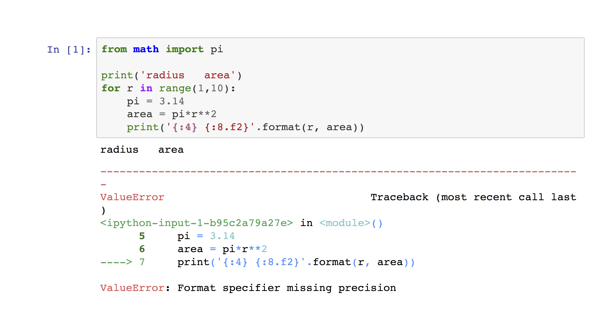

MTH 337 - Spring 2022
Syllabus
Project Report Guide
Collaboration
Using external resources
Additional Python features
Report grading rubrics
Report Style Guide
Report introduction
Report conclusions
Report organization
References
Math formatting
Code structure
Code sequencing
Code comments
Execution errors
Example
Output size
Output formatting
Graphs and plots
Useful links
Python tools
Weekly Schedule
Current Tasks
Projects
A prime or not a prime
Pythagorean triples
MTH 337 - Spring 2022
MTH 337
»
Project Report Guide
»
Example: Execution errors
View page source
Example: Execution errors
Bad:
